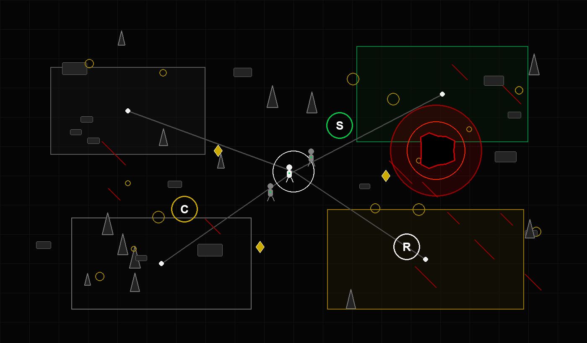

ONLINE PC SURVIVAL
LAST MAN STANDING
Join a live tier, collect CR, complete daily quests, and survive the Boss. If you die, your run is over.
Windows build. Online server required. Unzip, run the EXE, log in, play.

What You Do
Enter an isolated tier world, move through a hostile monochrome arena, grab crystals, finish map objectives, and avoid danger zones while the live leaderboard tracks who survives the longest.
How It Works
The PC client connects to the online Render server. Movement, chat, objectives, hazards, Boss state, quests, and leaderboards are synced through the backend.
Install
- Download the Windows zip.
- Extract it anywhere.
- Run
LastManStanding.exe.